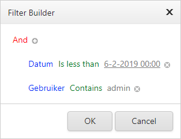

Groepeer (bijvoorbeeld op Functie) door een kolomkop naar boven te slepen. U kunt kolomkoppen ook weer terug naar de tabel slepen.
Sorteer (oplopend/aflopend) door eenmaal in de kolomkop te klikken.
Selecteer
 voor meer informatie per getoond resultaat.
voor meer informatie per getoond resultaat.Selecteer
 om deze informatie weer te verbergen.
om deze informatie weer te verbergen.Filter binnen een kolom met een zoekopdracht. Klik op
 voor alle zoekopties.
voor alle zoekopties.
Wijzig gecombineerde filters door de Filter Builder te openen. Klik linksonder op de link.

Hier kunt u complexe filters samenstellen. Alle onderdelen kunt u wijzigen. Klik bijvoorbeeld op 'Datum' of 'Gebruiker' om de kolom waarop gefilterd wordt te wijzigen.

Verwijder alle filters door rechtsonder op Clear te klikken.
U kunt daar ook het aantal getoonde resultaten per pagina instellen.

Nieuw contact
Klik
 (New) om een nieuw contact aan te maken.
(New) om een nieuw contact aan te maken.Vul alle velden in en klik op Opslaan.
Wijzig contact
Klik
 (Edit) naast een contact om deze aan te passen.
(Edit) naast een contact om deze aan te passen.Pas de velden aan en klik op Opslaan.
Verwijder contact
Klik
 (Delete) naast een contact om deze te verwijderen.
(Delete) naast een contact om deze te verwijderen.Bevestig verwijderen met OK.
Kopieer contact
Klik
 (Kopieer) naast een contact om deze te kopiëren.
(Kopieer) naast een contact om deze te kopiëren.Wijzig eventueel enkele velden en klik op Opslaan.